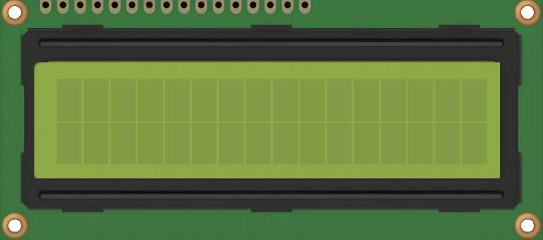

Economics & CS, Texas A&M · GTM/Operations, dConstruct Robotics
I study economics because I'm interested in how people, markets, and organizations actually behave, and I picked up computer science more recently as another way to look at the same questions. In practice, that means I gravitate toward roles that sit between the technical and the commercial. I like reading the numbers, but I also like getting my hands on the hardware, out in the field, with the people who actually have to make a product work. Case in point: my roommates are all engineers.
Most recently that meant a summer as an Operations & GTM Intern at dConstruct Robotics, a Series A robotics startup bringing autonomous reality-capture robots to the construction industry. I split my time between market and competitive analysis for the US launch, and getting hands-on with the handheld scanner and the d.ASH-ER robot itself: running obstacle-avoidance and navigation tests, writing documentation for customer pilots, and troubleshooting hardware issues directly with the engineering team in Singapore. That experience has only deepened my draw towards roles that blend technical understanding with business needs.
Before tech pulled me in, I spent 4 years of my high school life with MUN Impact, a UN-accredited youth organization spanning 171 countries. I eventually became Global Co-Secretary-General, running a large, geographically distributed team and representing the organization at UN forums including ECOSOC and the UN Water stakeholder consultations. I also served two years in the Singapore Civil Defence Force as a firefighter, and I currently consult pro bono with 180 Degrees Consulting at Texas A&M. If there's a thread through it, it's that most of these roles put me in a room with people who didn't share my language, timezone, or context, and left me to figure out how to work with them anyway. Wherever I end up, that's a skill I hope to put to good use every day.
Where that shows up
Econ major with a CS minor added on purpose — I want to understand systems from the inside (how they're built) and the outside (how people and markets respond to them).
Market sizing and revenue modeling for a US launch, paired with hands-on robot testing, customer-pilot prep, and cross-continent hardware troubleshooting.
Ran a large, distributed volunteer organization across 171 countries and represented it at UN forums — managing people I'd mostly never met in person, on a deadline.
Currently consulting with Texas A&M's chapter, applying the same market-and-people lens to organizations that need it most.
Also building
Between the internship and the org-running, I build small tools to fix my own annoyances — a Gmail automation that tracks VC deal flow, a flashcard converter used by other students, and (most recently) a desk robot that makes faces at the room. All three are on the projects page.